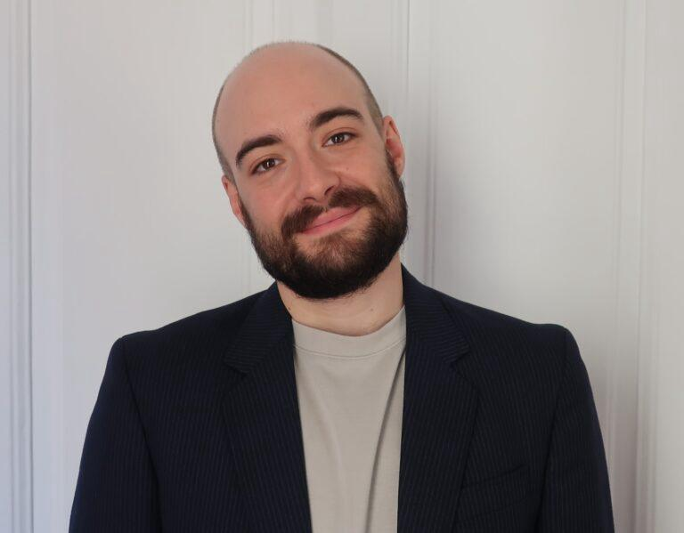

Political Theory & Migration Ethics
Lukas Schmid
Political theorist working on migration, borders, and the legitimacy of state authority.
Marie Skłodowska-Curie Postdoctoral Fellow at Universitat Pompeu Fabra, Barcelona.

I'm a political theorist working on migration, citizenship, and the legitimacy of state authority. My first book, Illegitimate Borders: Liberal Democracy and the Restriction of Movement, is under contract with Oxford University Press.
As of September 2026, I hold a Marie Skłodowska-Curie Postdoctoral Fellowship in the Department of Political and Social Sciences at Universitat Pompeu Fabra (UPF), Barcelona. Previously, I was a Postdoctoral Research Fellow in the Leibniz Research Group “Transformations of Citizenship” at the Research Centre Normative Orders, Goethe University Frankfurt (2023–2026), and before that a Research Affiliate on the “Ethics of Migration Policy Dilemmas” project at the Migration Policy Centre, European University Institute, which I continue to co-coordinate.
I completed my PhD in Political Science (Political Theory) at the European University Institute in 2023, with a thesis on the legitimate authority of immigration control supervised by Andrea Sangiovanni. It won the 2024 ECPR Jean Blondel Prize for the best thesis in politics. I also hold an MRes from the EUI, an MSc in Political Theory from the London School of Economics, and a BA in Politics and Law from the University of Munich.